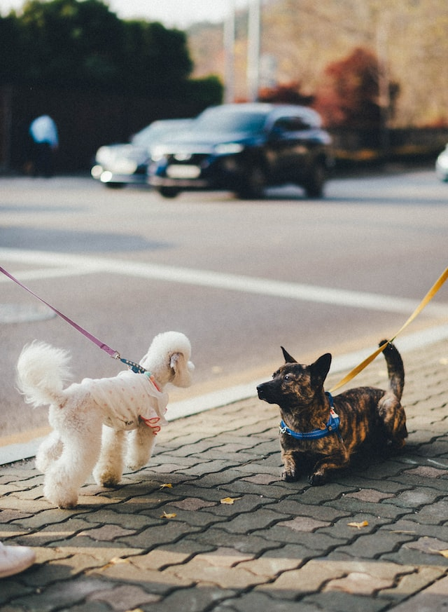

Mascotas en el espacio público
Paseá siempre a tu mascota con correa, collar y bozal (en caso de ser agresiva) para evitar que deambule pobremente y se pierda. También para prevenir que se lastime o lastime a otros.
Ponele una chapita con su nombre y un número de teléfono. Así, podrán contactarte en caso de que se pierda.
Cuando pasees a tu mascota, no olvides llevar siempre una bolsita para levantar su caca, cerrarla y tirarla al contenedor negro.
